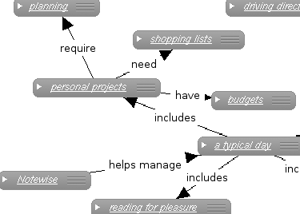

- Sealing The Cracks
- The World Is Your Oyster
- Maximize Your Ideas
- Tame The Overload
- Take Notes Visually

Image Caption... This could be sort of long I imagine...
Sealing The Cracks
In a typical day, you might...
- ...read detailed portions of three documents and form some conclusions about the issues they address. Where do you record these conclusions, and the rationale that led to them?
- ...learn a couple of technical tricks at work that could save you time when working with an unfamiliar computer application. Where do you jot these down so you can refer to them later on?
- ...brainstorm some ideas for an upcoming sales pitch. Where do these get stored so you don't lose your valuable insights and can retrace your thought process?
- ...listen to a friend tell you about a fascinating historical novel she's reading. Where do you write down the title so you can find it in the library this summer?
- ...hear about a new vendor that might be worth checking into. Where do you log this information so you can recall which suppliers it might replace? How will you even remember to research it in the first place?
- ...get directions to a friend's home, which you'll visit this weekend but which you're likely to need to return to again in the future. Where do you put these directions so they're there whenever you need them?
On and on the list goes. Productive people are information consumers and knowledge generators, and yet most of them have no easy way to store their most precious resource. Notewise lets you manage all this and so much more. With it, you can simply remember whatever you once knew.
See some examples! >> Try It Out!